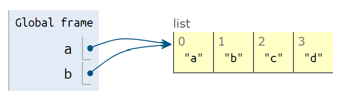
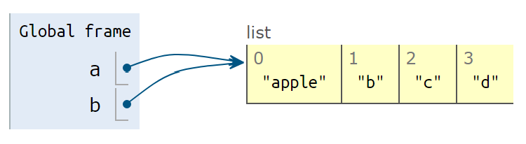

5 常用数据结构
数据结构：是计算机中存储、组织数据的方式。（几乎是废话）
例如“新华字典”：
- 数据就是每一个字的解释
- 组织方式是按拼音，顺序排列
- 一个索引（目录），以供你查找数据。
Python中的Dict与之类似，后面详细解释。
5.1 列表List
一个列表List，就是把几个元素(items)，用一个固定的顺序连在一起的数据结构。列表List是一个重点，超级常用，内容比较多。
5.1.1 列表的创建
创建一个列表，可以用中括号[]，其中每一个元素用逗号分开。
为了好看，建议每个逗号后加一个空格。
#%% 列表List
numbers = [1, 2, 3, 4, 5, 6]
letters = ["a", "b", "c", "d"]
print(numbers)## [1, 2, 3, 4, 5, 6]print(letters)## ['a', 'b', 'c', 'd']列表中的元素，可以混合多种类型。但一般不建议这么做。
a_list = [1, 2, 3, "a", "b", "c"]
print(a_list)## [1, 2, 3, 'a', 'b', 'c']我们还可以创建空List。比如，当列表的第一个元素还没确定，而你要先行创建列表，然后再生成元素添加进去。
#%% 空列表
empty_list = []
empty_list = list()
print(empty_list)## []对一个字符串String 使用list()函数，可以把字符串分解成字母组成的List。这本质上就是类型转换：用类型的名字做转换函数的名字。
如果把函数名list看成是一个动词，或者可以解释成：list a string。
#%%
print(list('apple'))## ['a', 'p', 'p', 'l', 'e']注意：实际上，list()可以用于所有类型的序列（有序列结构的其他数据），以后我们遇到回说。
特别地，如果我们转换一个多行的字符串，会发现什么？
a = '''hello
python
'''
print(list(a))## ['h', 'e', 'l', 'l', 'o', '\n', 'p', 'y', 't', 'h', 'o', 'n', '\n']注意，换行符\n也出现在其中。实际上，应该把换行符之类的不可见字符也看成一个真正的字符，实际上存在，但部分情况不可见而已
5.1.2 列表的元素
要引用一个列表的元素，也使用[]，其中包括元素的索引(index)，注意第一个元素的索引是0（Python和c语言一样，从0开始计数）
print(numbers)## [1, 2, 3, 4, 5, 6]print(numbers[0])## 1print(numbers[3])## 4可以反向引用元素，例如-1指向最后一个元素，-2指向倒数第二个，如此类推
print(numbers)## [1, 2, 3, 4, 5, 6]print(numbers[-1])## 6print(numbers[-2])## 5列表中的元素是可变的。同样，用等号=对某个元素赋值即可
print(numbers)## [1, 2, 3, 4, 5, 6]numbers[0] = 999 # 修改第一个元素的值为999
print(numbers)## [999, 2, 3, 4, 5, 6]添加元素
在List的最后添加元素可以用.append()。添加多个元素，可以用.extend()，注意extend使用一个list作为参数。插入元素到指定索引号.insert()
letters = list("abcd")
print(letters)## ['a', 'b', 'c', 'd']letters.append('e')# 添加一个元素
print(letters)## ['a', 'b', 'c', 'd', 'e']letters.extend(['f','g']) #添加多个元素：把要添加的元素放进一个list里
print(letters)## ['a', 'b', 'c', 'd', 'e', 'f', 'g']letters.insert(3,"apple") #元素插入到指定索引的位置
print(letters)## ['a', 'b', 'c', 'apple', 'd', 'e', 'f', 'g']移除：移除某个元素，使用.remove()；按照索引移除del
print(letters)## ['a', 'b', 'c', 'apple', 'd', 'e', 'f', 'g']letters.remove('apple') # 如果'apple'不存在，会抛出错误：ValueError: list.remove(x): x not in list
print(letters)## ['a', 'b', 'c', 'd', 'e', 'f', 'g']del letters[0]
print(letters)## ['b', 'c', 'd', 'e', 'f', 'g']5.1.3 注意：List的拷贝
这部分可能有点抽象。
- 变量名是个标签
- 变量赋值，给内存中的一个数据“贴标签”
- 那用一个变量，给另一个变量赋值会如何？
以一个数字来举例
a = 123
print(a)## 123b = a
print(b)## 123a = 321
print(f'a is {a}\nb is {b}')## a is 321
## b is 123中间发生了什么
a = 123
创建了一个整型对象，里面存放了123，把a这个名字绑定到这个对象上。
b = a
把a这个标签，所指代的对象，再贴一个标签b。这个时候,a和b都指向这个整型对象，里面存放了123。
a = 321创建了一个新的整型对象，里面存放了321，把a这个名字，重新绑定到这个对象上。
现在 a -> 321，b -> 123
但List比较特殊
以letters来举例：
a = ["a", "b", "c", "d"]
print('a is ', a)## a is ['a', 'b', 'c', 'd']- 变量
a指向["a", "b", "c", "d"]

b = a 
- 变量
b指向a相同的数据["a", "b", "c", "d"]
a[0] = 'apple'
print('b is ', b)## b is ['apple', 'b', 'c', 'd']- 你修改了列表
a的值，b的值也改变了！因为a和b一直指向同一个对象。

- 如果要避免这种情况，要明确地把
a复制一次，
a = ["a", "b", "c", "d"]
b = a.copy()
print(f'a is {a}\nb is {b}')## a is ['a', 'b', 'c', 'd']
## b is ['a', 'b', 'c', 'd']a[0] = 'apple'
print(f'a is {a}\nb is {b}')## a is ['apple', 'b', 'c', 'd']
## b is ['a', 'b', 'c', 'd']这样就不会互相干扰了。
总结：
- Number ,String,Tuple等，是“不可变类型”：修改这个变量，会创建一个对象，然后重绑定（转贴标签）
- List等，是“可变类型”：修改里面的值，其实是“原地修改”，导致所有指向这个数据的变量都发生改变。
- 要避免上述情况，请明确地复制原List一次。
5.1.4 List的切片
如何获取（或者修改）一个List中的某一段？
a = list('abcdef')
print(a)## ['a', 'b', 'c', 'd', 'e', 'f']截取：从第2个元素开始到第4个元素：（证券答案应该是['b', 'c', 'd']
a[起点的索引 : 终点的索引-1]
如：
a[1:4]：切片起止点：包含起点（1号，即b），不包含终点（不含4号，即e）
print(a[1:4])## ['b', 'c', 'd']可以不写起点或者终点，默认是到一边的尽头
print(a[:4]) # 4号元素之前（0，1，2，3）（不包含终点）## ['a', 'b', 'c', 'd']print(a[3:]) # 3号元素以及之后（3，4，5）（包含起点）## ['d', 'e', 'f']可以倒数切片：
如从倒数第二个元素开始到最后
print(a[-2:]) # 倒数第二个元素开始到最后（包含起点）## ['e', 'f']从头切到倒数第二个元素（不含终点）
print(a[:-2]) # 从头切到倒数第二个元素（不含终点）## ['a', 'b', 'c', 'd']切片赋值 ： 直接覆盖原理位置的值，可以不等长
a = list('abcdef')
print(a[2:4])## ['c', 'd']注意：a[2:4]只有2个值，但我们替换成不等长的其他List，如替换3个值进去
a[2:4] = ['x','y','z']
print(a)## ['a', 'b', 'x', 'y', 'z', 'e', 'f']这使得['c', 'd'] -> ['x', 'y', 'z']
赋予空列表，可以达到删除的效果。
a[2:5] = [] # x,y,z是2，3，4号
print(a)## ['a', 'b', 'e', 'f']还可以按步长切片
a[起点:终点:步长]
步长默认为1（每个元素都取值），如果设置为2，每2个元素取一个值
a = list('abcdefgh')
print(f'''a is {a}
a[1:6] is {a[1:6]}
a[1:6:2] is {a[1:6:2]}
''')## a is ['a', 'b', 'c', 'd', 'e', 'f', 'g', 'h']
## a[1:6] is ['b', 'c', 'd', 'e', 'f']
## a[1:6:2] is ['b', 'd', 'f']5.1.5 其他常用操作
- 原地排序
.sort(),默认的排序方式是“从小到大”
注意：这个方法会改变原List的顺序
a = [5,3,4,2,1]
a.sort()
print(a)## [1, 2, 3, 4, 5]也可以逆序：从大到小
a.sort(reverse=True)
print(a)## [5, 4, 3, 2, 1]- 排序
sorted()，
注意：sorted()回返回一个新的、排序后的List，不会改变原List的顺序。
a = [5,3,4,2,1]
print(a)## [5, 3, 4, 2, 1]print(sorted(a)) # 打印排序的结果## [1, 2, 3, 4, 5]print(a) # 原list的顺序并未改变## [5, 3, 4, 2, 1]也可以逆序排序（从大到小）
b = [3,4,5,1,2]
print(sorted(b, reverse=True))## [5, 4, 3, 2, 1]- 统计某个元素的数量
.count()
a = [1,2,2,2,3,3,5,5,5,5,5]
print(a.count(3)) # a中的3有多少个？## 2- 查找某个元素第一次出现的索引
a = list('an apple')
print(a)## ['a', 'n', ' ', 'a', 'p', 'p', 'l', 'e']print(a.index('p'))## 4- 获取的List的长度
题外话：从长度可以知道，最后一个元素的索引号是长度-1
a = list("apple")
print(a)## ['a', 'p', 'p', 'l', 'e']print(len(a))## 5- 获得最大最小值
a = [1,2,3,4,5]
print(max(a)) # 如果包含不可比较大小类型，如str，会出错！## 5print(min(a))## 15.2 元组Tuple
元组：同样是序列结构，可以视为“不可修改的列表”，其中的数据，一旦创建，就不可修改。
5.2.1 元组的创建
和List类似，但使用小括号创建。
注意，从打印的结果也可以看出，()表示元组，中括号[]表示列表。
a = (1,2,3,4,5)
print(a) # 元组## (1, 2, 3, 4, 5)b = [1,2,3,4,5]
print(b)## [1, 2, 3, 4, 5]如果元组只有1个元素，必须加一个逗号,，以避免python认为这是个运算。
a = (1,) # 正确的做法，识别成元组
print(a)## (1,)b = (1)
print(b) # 会被识别成一个数字## 1也可以不用小括号，只使用逗号创建（为了维持代码的清晰和可识别，不建议这么做）
a = 1,2,3,4,5
print(a)## (1, 2, 3, 4, 5)5.2.2 访问元组的元素
访问元组的方法和List完全一样，可以照搬。
但是“可读不可写”,不能做任何修改或删除。
a = (1,2,3,4,5) # 读取元素和获得切片等，和List完全一样
print(a[3])## 4print(a[2:4]) ## (3, 4)a = (1,2,3,4,5)
a[3] = 999 # 要对元组的值进行修改，会报错TypeError: 'tuple' object does not support item assignment5.2.3 元组和列表的互转
List和Tuple用非常接近的结构，互相转换只要用前述的“简单类型转换”方法即可
a_list = list('apple') # str转为list
a_tuple = tuple(a_list) # list转为tup;e
print(a_tuple) # 注意，打印的结果是()小括号## ('a', 'p', 'p', 'l', 'e')a_tuple = (1,2,3,4,5) # 创建一个tuple
a_list = list(a_tuple)
print(a_list)## [1, 2, 3, 4, 5]5.2.4 为什么要用tuple，不用list？
Tuple只有List的一半能力（只能读，不能改），只用List也可以完成Tuple的所有功能，那用Tuple有何意义？
- List可能被意外修改，但Tuple不会
如前述，List是一个可变类型，可以有不止一个变量名指向同一个List数据。所以，使用List保存的数据，可能会在传递的过程中，在不经意间被你的某些代码所修改，比如忘记.copy()。
如果一个列表结构的数据，原则上不应该被改变，则可以采用Tuple。如果被代码意外修改，则会报错通知你。
- Tuple一般会比List节约内存，但我们一般不必考虑这一点
5.3 字典Dict
- 和List或者Tuple类似，dict是很多数据的集合体
- 和List或者Tuple不同，dict中的数据不保证顺序，
- dict中的元素访问，是通过“键key”访问，一个key会对应一个value。
- key的必须是不可变类型，如string，int，或者tuple。（tuple也可以做key）
- 和List一样，dict可以存放不同类型的数据
- key是唯一的，如果对一个key赋予不同的值，那么新的value会替换旧的value.
这和新华字典类似： 1. 通过这个字的拼音(即key)，找一个字的含义(value) 2. 你一般不会通过这个字在字典中的第几个(index)来访问，虽然也不是不可以
5.3.1 创建dict
使用大括号，key:value的方式，key-value之间使用逗号分隔
{key1:value1, key2:value2, ... }
例如班级人数,一班50人，二班49人，三班30人。
这里使用class_x的字符串来做key，储存班级的人数。这个dict的作用是，可以通过班级的名称来获取班级的人数。
class_size = {'class_1':50, 'class_2':49,'class_3':39}
print(class_size)## {'class_1': 50, 'class_2': 49, 'class_3': 39}我们建立了一系列的映射，从字符串（本例中就是班级名称），到键值（本例中是班级人数的整型）
"class_1" -> 50
"class_2" -> 49
"class_3" -> 39
5.3.2 访问字典数据
字典数据的访问，和List或者Tuple一样，都是用中括号[]，但提供的数据的索引index，而是key（键名）
# 获取一班的人数：
# 一班的key是"class_1"
print(class_size['class_1'])
# 当然3班也一样## 50print(class_size['class_3'])## 39修改其值也一样，直接赋值即可
class_size['class_3'] = 40
print(class_size)## {'class_1': 50, 'class_2': 49, 'class_3': 40}实际上，添加键值的方法就是直接赋值
例如，四班，key为class_4，人数为45，则：
class_size['class_4'] = 45
print(class_size)## {'class_1': 50, 'class_2': 49, 'class_3': 40, 'class_4': 45}同样，删除键值的函数是del，和删除一个变量一样。
删除'class_4'。
del class_size['class_4']
print(class_size)## {'class_1': 50, 'class_2': 49, 'class_3': 40}5.3.3 获得所有键值
获得全部的key，使用.keys()方法。注意是复数，有个s。
print(class_size.keys())## dict_keys(['class_1', 'class_2', 'class_3'])注意，.keys()方法返回的不是一个List，所以我们一般还是转为List，便于进行其他操作。转换也是直接采用list()函数即可。
keys = list(class_size.keys())
print(keys)## ['class_1', 'class_2', 'class_3']5.3.4 所有的value
获得全部的value，使用.values()方法。
print(class_size.values()) #同样是复数，有个s。## dict_values([50, 49, 40])同样，我们可以转换为List。
values = list(class_size.values())
print(values)## [50, 49, 40]5.3.5 其他操作
和List一样，dict也可以用len()函数获得数据的长度
print(len(class_size))## 35.3.6 别名与拷贝
和List一样，如果用一个dict为另一个dict赋值，那么2个变量和指向同一个数据，对其中一个数据的修改，会使得另一个变量中的数据也改变（毕竟只是同一个数据的2个名字）
要避免这一点，同样使用.copy()函数，拷贝一个dict。具体和List一样，这里不再重复。
5.3.7 不存在的key
如果我们直接读取一个不存在的key，会报错
class_size['class_9']key错误：即找不到’class_9’这key
KeyError: 'class_9'但是，某些时候，我们想，如果key不存在，则返回一个默认值，而不要因为报错而中断程序。
这个时候可以使用.get()方法：如果key存在，则返回对应的value。如果不存在，则返回我们前面说过的None。
print(class_size.get('class_1')) # 获取一个存在的key## 50print(class_size.get('class_9')) # 获取一个不存在的key## None对于可能不存在的key，我们也可以使用自己指定的值。具体到本例，班级人数不可能是0，所以我们可以考虑用0来表示这个key（班级名称）不存在，或者你打错字了。
.get()这个方法的第二个参数，则是找不到key的时候的默认值。
print(class_size.get('class_9', 0)) ## 05.3.8 key是否存在
判断一个key是否存在， 也是用in。
print('class_1' in class_size) # class_1是存在的## Trueprint('class_9' in class_size) # class_9是不存在的## False